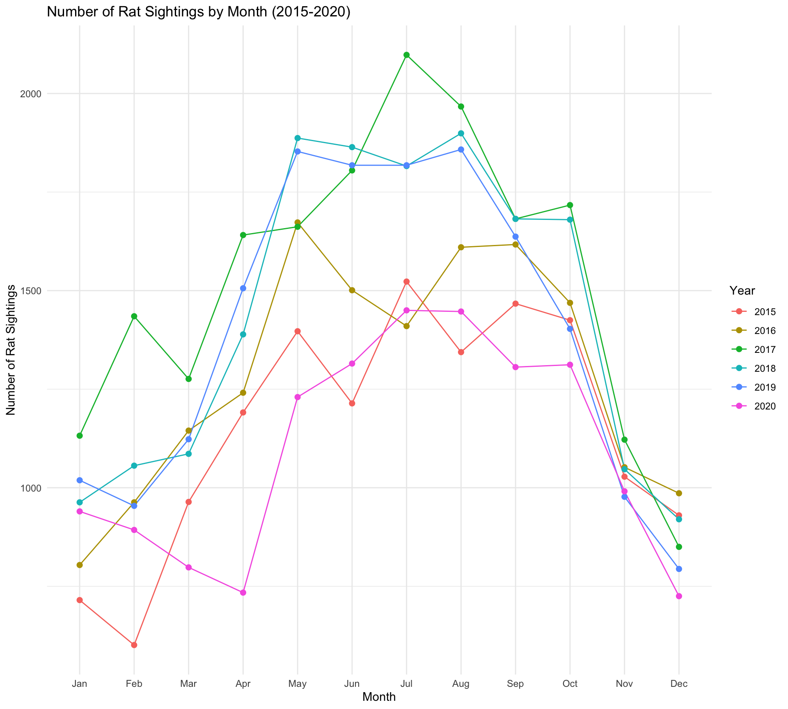

Manhattan Rat Sighting Data

Monthly Trends in NYC Rat Sightings (2015-2020)
Code
# Filter data for the years 2015-2019
filtered_rat_data <- rat_sightings_data %>%
filter(year_created >= 2015 & year_created <= 2019)
# Line plot for the number of rat sightings by month with points
ggplot(filtered_rat_data, aes(x = month_created, group = year_created)) +
geom_line(aes(y = after_stat(count), color = factor(year_created)), stat = "count") +
geom_point(aes(y = after_stat(count), color = factor(year_created)), stat = "count", size = 2) +
labs(title = "Number of Rat Sightings by Month (2015-2020)",
x = "Month",
y = "Number of Rat Sightings") +
scale_x_discrete(labels = c("Jan", "Feb", "Mar", "Apr", "May", "Jun", "Jul", "Aug", "Sep", "Oct", "Nov", "Dec")) +
scale_color_discrete(name = "Year") +
theme_minimal()
Residential Rat Sightings by Borough
Code
# Specify the desired location types
desired_location_types <- c(
"3+ Family Apt. Building",
"1-2 Family Dwelling",
"3+ Family Mixed Use Building",
"1-2 Family Mixed Use Building",
"3+ Family Apartment Building",
"Single Room Occupancy (SRO)",
"Apartment",
"Residence",
"1-3 Family Dwelling",
"Residential Property",
"1-3 Family Mixed Use Building",
"3+ Family Apt., Private House"
)
# Create a new dataset with only residential sightings
residential_sightings <- rat_sightings_data %>%
filter(location_type %in% desired_location_types)
# Step 1: Calculate the count of residential rat sightings by borough
residential_counts <- residential_sightings %>%
group_by(borough) %>%
summarise(residential_count = n())
# Step 2: Calculate the total count of rat sightings by borough
total_counts <- rat_sightings_data %>%
group_by(borough) %>%
summarise(total_count = n())
# Step 3: Merge the two datasets and calculate the proportion
borough_proportions <- merge(residential_counts, total_counts, by = "borough", all.x = TRUE) %>%
mutate(proportion_residential = residential_count / total_count)
# Print the result
knitr::kable(borough_proportions)| borough | residential_count | total_count | proportion_residential |
|---|---|---|---|
| Bronx | 14757 | 18013 | 0.8192417 |
| Brooklyn | 24263 | 34610 | 0.7010402 |
| Manhattan | 15800 | 24300 | 0.6502058 |
| Queens | 9648 | 13957 | 0.6912660 |
| Staten Island | 2776 | 3967 | 0.6997731 |